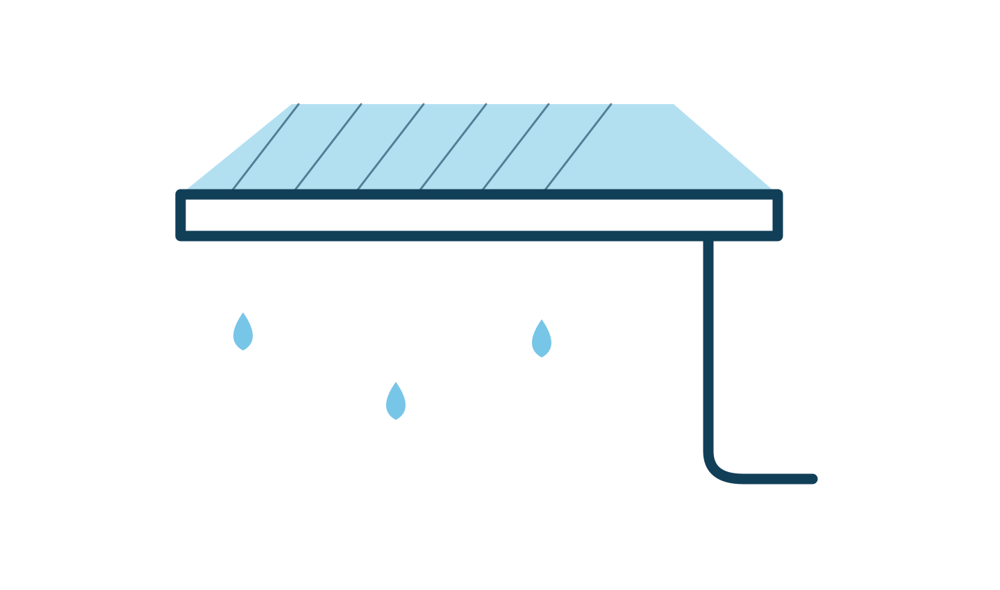
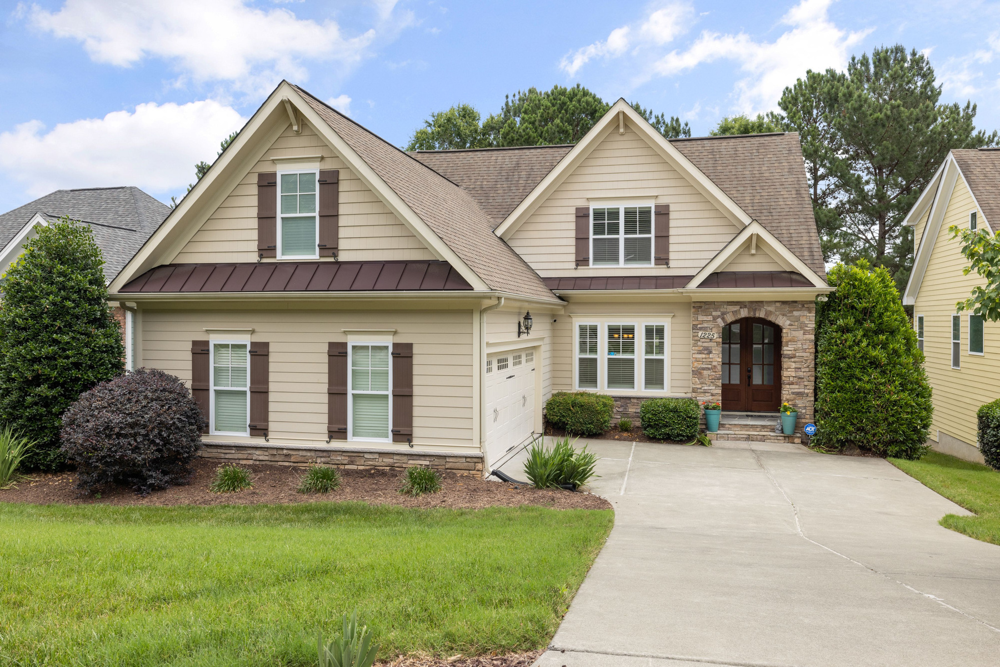
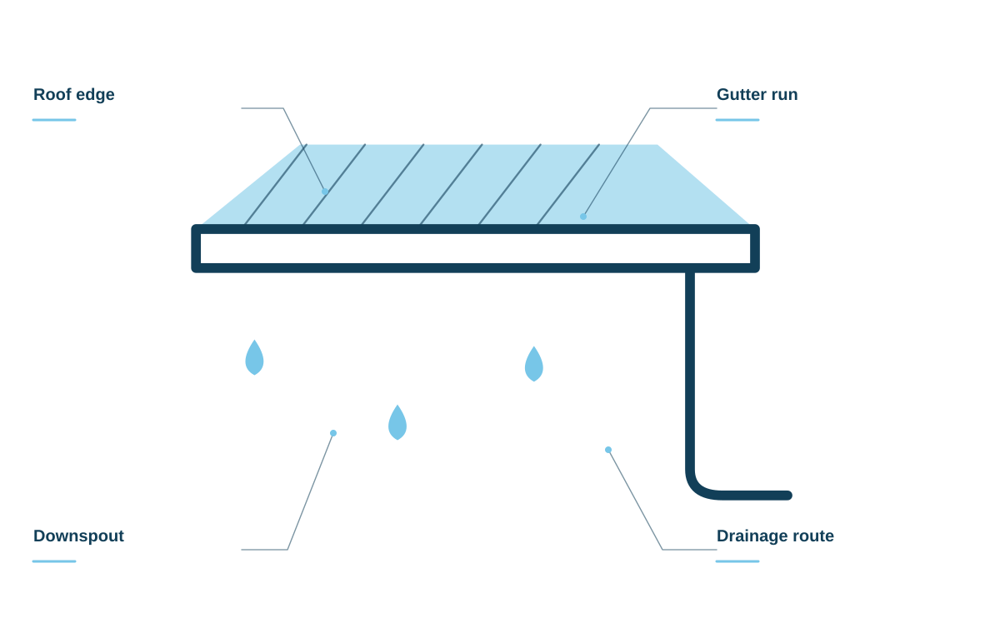
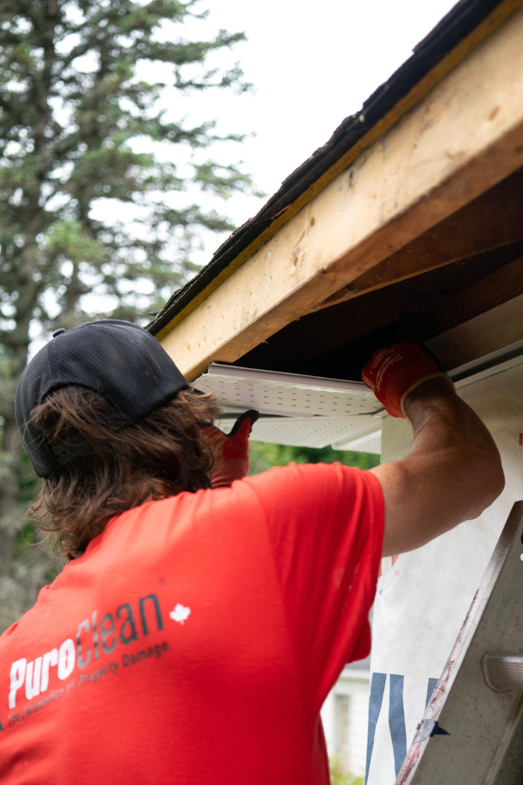

Gutter installation
A gutter plan shaped around your roofline and drainage needs.

Thoughtful gutter work for the roofline above you and the water moving around your home.
Talk about your gutters ↗
A gutter plan shaped around your roofline and drainage needs.
Clear accumulated leaves and debris from the system.
Discuss joints, alignment, and where the water should go next.
Review suitable options for the trees and roof around your property.
A useful gutter plan follows the water through the whole system. Lengths, joints, outlets, and downspout routes all belong in the brief.

HARBORLINE GUTTERS / THE DETAILS MATTERDiscuss the roofline, existing gutters, and the areas you want installed, cleaned, or repaired.
Corners, joints, and outlets should be considered as parts of one system.
Review downspout placement, access, and the way the system fits the property.
Roof edges, joints, downspout routes, and the ground below. We discuss how the whole system fits your property before planning the work.
Start with your roofline ↗Practical attention for a part of the home that works hardest when the weather changes.

Start with the property, your priorities, and the details you want us to understand.
Talk through suitable options, practical access, and the work you want included.
Review the proposed scope and ask questions before deciding on the next step.
When you get in touch, a little context goes a long way. These are the details that help us start a useful conversation about your gutter systems project.
Tell us what you have in mind ↗Tell us about roofline and height so the conversation starts with your situation.
A few details about the existing system help us understand what you need.
Share surrounding trees when you get in touch, including photos where useful.
Let us know about downspout routes so the proposed scope reflects your priorities.
Show us the section that concerns you. We can discuss its condition and whether a focused repair makes sense.
Roofline length, height, access, and the work you want done all help define the scope.
Yes. We can talk through the roofline, surrounding trees, and your maintenance preferences before comparing options.
Thoughtful gutter work for the roofline above you and the water moving around your home.